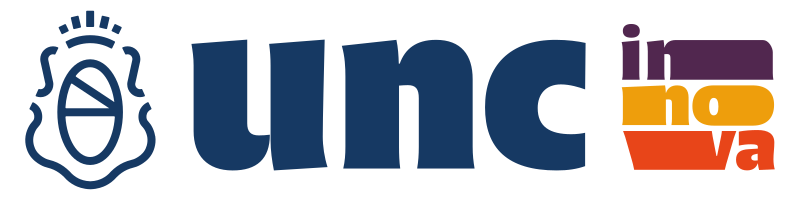

UNC Innova es el concurso de proyectos innovadores de la Universidad Nacional de Córdoba. Desde su creación en 2012, más de 400 iniciativas han ingresado a su catálogo. Esta visualización recupera los proyectos de las últimas tres ediciones [2023~2025].
Reconocimientos
1° premio
2° premio
3° premio
Ejes temáticos
Transformación tecnológica
Bioeconomía
Conservación de la biodiversidad y cambio climático
Equidad, inclusión y acceso al conocimiento
Salud humana
Categorías
Investigación o desarrollo aplicable
Producto, proceso o servicio innovador
Instituciones
Edición
Integrantes
por equipo
Download SVG